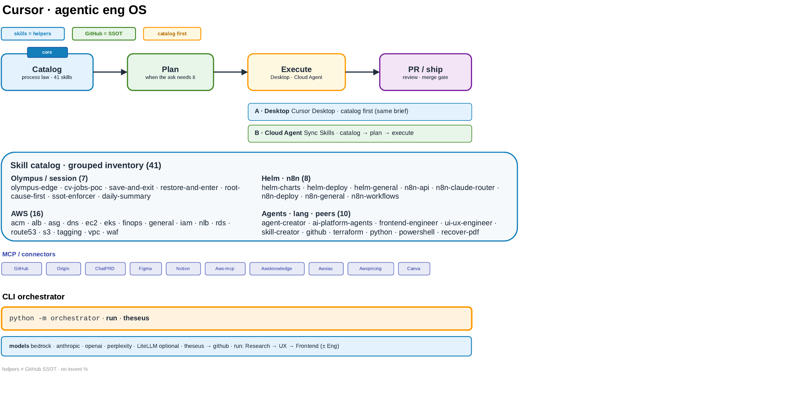

Selected Work
Agentic eng OS — Catalog → Plan → Execute → PR
Grok steers · Cursor codes · GitHub SSOT
Diagram · cursor-page-v4

/cursor · Place A under Selected Work · not a top-nav item · no 41-name wall
How the platform gets built.
Catalog first. Plan when it needs it. Execute. Ship the PR.
- skills = helpers
- GitHub = SSOT
- catalog first
I don’t freestyle multi-surface work. Catalog first, then plan, then execute — Cloud Agents get the same brief. Skills help; GitHub stays SSOT for IDs. Grok Bot orchestrates; I take Cursor-shaped work, push back on bad briefs, and ship PRs back. Challenge welcome is load-bearing.
Full skill inventory — grouped, helpers ≠ ID SSOT
Helpers ≠ ID SSOT. 41 dirs + CATALOG.md + SSOT.md, grouped 7+16+8+10.
Olympus / session (7)
olympus-edge · cv-jobs-poc · save-and-exit · restore-and-enter · root-cause-first · ssot-enforcer · daily-summary
AWS (16)
aws-acm · aws-alb · aws-asg · aws-dns-delegation · aws-ec2 · aws-eks · aws-finops · aws-general · aws-iam-least-privilege · aws-nlb · aws-rds · aws-route53 · aws-s3 · aws-tagging-standards · aws-vpc-patterns · aws-waf
Helm · n8n (8)
helm-charts · helm-deploy · helm-general · n8n-api · n8n-claude-router · n8n-deploy · n8n-general · n8n-workflows
Agents · lang · peers (10)
agent-creator · ai-platform-agents · frontend-engineer · ui-ux-engineer · skill-creator · github · terraform · python · powershell · recover-pdf
CLI / models — inventory keeps mock
Invoke: python -m orchestrator · subcommands run · theseus · state agent-api/.orchestrator
Factory providers (all real): mock · bedrock · anthropic/claude · openai/gpt · perplexity
.env.example defaults RESEARCH_PROVIDER=mock · ENGINEERING_PROVIDER=mock. The diagram omits mock. This inventory keeps mock.
Theseus (CLI): connector registry v1 = github only.
In-cluster agent-api (separate path): Bedrock eu.anthropic.claude-sonnet-4-5-20250929-v1:0 + in-cluster MCP — ≠ CLI orchestrator ≠ LiteLLM Admin spend.
MCP / connectors — separate band, not the 41
Tezka 41 ≠ Eng-box MCP list ≠ Theseus github-only. Label separately. Eng-box examples used in Olympus work: GitHub · Origin · ChatPRD · Figma · Notion · Aws-mcp · Awsknowledge · Awsiac · Awspricing · Canva (Finance needsAuth — not usable).